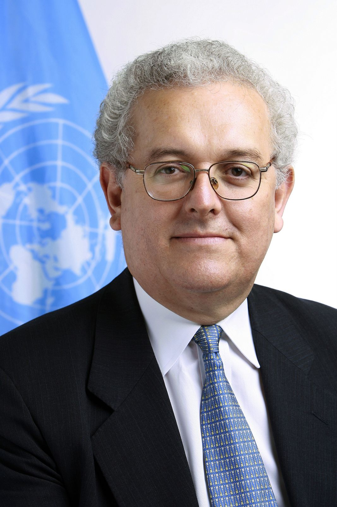

José Antonio Ocampo is Professor and Director of the Economic and Political Development Concentration in the School of International and Public Affairs, co-President of the Initiative for Policy Dialogue and Member of the Committee on Global Thought at Columbia University. He is also Chair of the Committee for Development Policy of the United Nations Economic and Social Council (ECOSOC) and of Colombia’s Rural Development Commission. He has occupied numerous positions at the United Nations and his native Colombia, including UN Under-Secretary-General for Economic and Social Affairs, Executive Secretary of the UN Economic Commission for Latin America and the Caribbean (ECLAC), and Minister of Finance, Minister of Agriculture and Director of the National Planning Office of Colombia. In 2012 he was one of the two candidates from developing countries for President of the World Bank. He has received numerous academic distinctions, including the 2012 Jaume Vicens Vives award of the Spanish Association of Economic History for the best book on Spanish or Latin American economic history, the 2008 Leontief Prize for Advancing the Frontiers of Economic Thought and the 1988 Alejandro Angel Escobar National Science Award of Colombia. He has published extensively on macroeconomic theory and policy, international financial issues, economic and social development, international trade, and Colombian and Latin American economic history. His most recent books include Global Governance and Rules for the Post-2015 Era, coedited with José Antonio Alonso (2015), several editions of Historia Económica de Colombia (the most recent one in 2015), The Economic Development of Latin America since Independence, with Luis Bértola (English 2012, Spanish 2013, Portuguese 2014, forthcoming in Chinese), Development Cooperation in Times of Crisis, edited with José Antonio Alonso (2012), the Oxford Handbook of Latin American Economics, edited with Jaime Ros (2011), Time for a Visible Hand: Lessons from the 2008 World Financial Crisis, edited with Stephany Griffith-Jones and Joseph E. Stiglitz (2010), and Growth and Policy in Developing Countries: A Structuralist Approach, with Lance Taylor and Codrina Rada (2009). He holds a BA in Economics and Sociology from the University of Notre Dame and a Ph.D. in Economics from Yale University.
